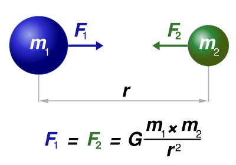
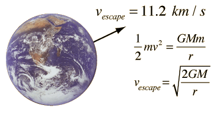
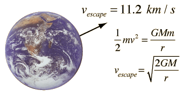

Gravitational Force
Johannes Kepler ( 1571 - 1630 ) , he studied the planatary motion in great detail . he formulated his finding as his three laws -
Kepler's First Law - All planets move in an elliptical path with the sun at a focus .
Kepler's Second Law - The radius vector from the sun to thr planet sweeps equal area in equal interval of time .
Kepler's Third Law - The square of the time period of a planet is proportional to the cube of the semimajor axis of the
ellipse .

The force of gravitation on object very near to earth is given by mg .
The bodies which are far apart from the earth we use universal law of gravitational force .
It states that a particle attracts every other particle in the universe using a force that is directly proportional to the product of
their masses and inversely proportional to the square of the distance between their them .

As shown in the given figure there is a body of mass m1 and another body of mass m2 which is somewhere else in the world they feel
a force of attrection towards each other with some force F1 and F2 respectively but both the forces are equal in magnitude .
Question - Figure out that by how much force the sun and the earth attrects each other if mass of earth is 5.98 × 1024K and mass of the
sun is 1.99 × 1030 K and the distance between them is 1.50 × 1011 m .

Solution -

Escape Velocity - the lowest velocity in which a body must have in order to escape the gravitational attraction of a particular planet or other object.
 
